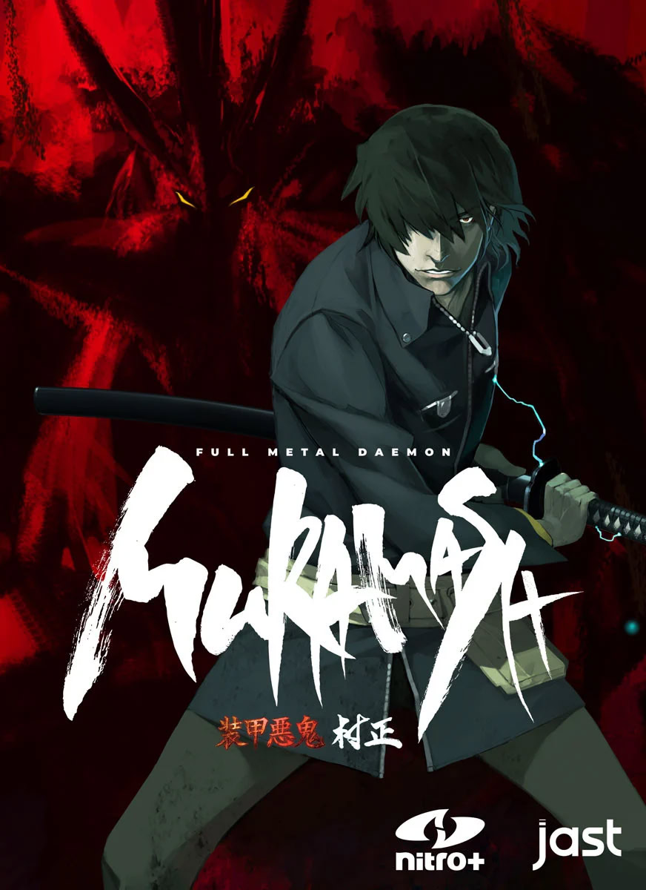

Fullmetal Daemon Muramasa

Sinopse
Desenvolvido pela famosa desenvolvedora de romances visuais Nitroplus, Full Metal Daemon Muramasa apresenta um mundo onde guerreiros – conhecidos como musha – são capazes de ganhar habilidades sobrenaturais colocando suas almas em gigantescas armaduras de samurai, conhecidas no universo como tsurugis. A história da visual novel segue Minato Kageaki, o piloto da amaldiçoada armadura Muramasa -que séculos atrás trouxe destruição ao mundo e até hoje só dá acesso às suas habilidades em troca do sangue de inocentes- enquanto ele luta tanto para livrar o mundo do mal e controlar o horror que se esconde dentro de seu tsurugi.